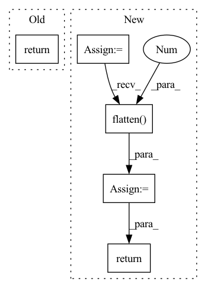

Pattern ID :1757
Before Change
super().__init__()
def forward(self, x_categ, x_cont):
return 0.
After Change
x = self.categorical_embeds(x_categ)
for attn, ff in self.layers:
x = attn(x)
x = ff(x)
flat_categ = x.flatten(1 )
normed_cont = self.norm(x_cont)
x = torch.cat((flat_categ, normed_cont), dim = -1)
return self.mlp(x)
In pattern: SUPERPATTERN
Frequency: 3
Non-data size: 5
Instances Fragment ID: 6884265
Project Name: lucidrains/tab-transformer-pytorch
Commit Name: 68a07cc4f6301efde2159e6d179c672b6a3bd7ec
Time: 2020-12-15
Author: lucidrains@gmail.com
File Name: tab_transformer_pytorch/tab_transformer_pytorch.py
M Class Name: TabTransformer
N Class Name: TabTransformer
M Method Name: forward(3)
N Method Name: forward(3)
M Parent Class: nn.Module
N Parent Class: nn.Module
M File Name: tab_transformer_pytorch/tab_transformer_pytorch.py
N File Name: tab_transformer_pytorch/tab_transformer_pytorch.py
M Start Line: 18
M End Line: 18
N Start Line: 115
N End Line: 125
Before Change
self.network = nn.Sequential(*layers)
def forward(self, x):
return self.network(x)After Change
def forward(self, x):
x = x.permute(0, 2, 1)
o = self.network(x)
o = o.flatten(1 , -1)
// o = torch.mean(o, dim=1)
return self.classifier(o) Fragment ID: 6884271
Project Name: kolaszko/haptic_transformer
Commit Name: 8c96d12327041a7a2e57b6293b37be63416d873c
Time: 2021-05-12
Author: mikolaj.lysakowski.bk@gmail.com
File Name: models/tcn.py
M Class Name: TemporalConvNet
N Class Name: TemporalConvNet
M Method Name: forward(2)
N Method Name: forward(2)
M Parent Class: nn.Module
N Parent Class: nn.Module
M File Name: models/tcn.py
N File Name: models/tcn.py
M Start Line: 72
M End Line: 73
N Start Line: 69
N End Line: 74
Before Change
self.pool = nn.AdaptiveAvgPool2d(output_size)
def forward(self, x):
return self.pool(x)
def feat_mult(self):
return adaptive_pool_feat_mult(self.pool_type)After Change
self.pool = nn.AdaptiveAvgPool2d(output_size)
def forward(self, x):
x = self.pool(x)
if self.flatten:
x = x.flatten(1 )
return x
def feat_mult(self):
return adaptive_pool_feat_mult(self.pool_type) Fragment ID: 6884151
Project Name: feng-lab/pytorch-image-models
Commit Name: 0004f37d25d59622ae82b3b9cc3583ddacff97c9
Time: 2020-04-27
Author: rwightman@gmail.com
File Name: timm/models/layers/adaptive_avgmax_pool.py
M Class Name: SelectAdaptivePool2d
N Class Name: SelectAdaptivePool2d
M Method Name: forward(2)
N Method Name: forward(2)
M Parent Class: nn.Module
N Parent Class: nn.Module
M File Name: timm/models/layers/adaptive_avgmax_pool.py
N File Name: timm/models/layers/adaptive_avgmax_pool.py
M Start Line: 89
M End Line: 89
N Start Line: 90
N End Line: 93